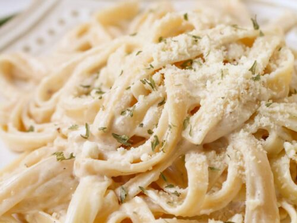

Alfredo Recipe

Creamy chicken alfredo served over Fettucini noodles
This simple chicken alfredo recipe is sure to be a new family favorite. Estimated cooking and prep time for this recipe is 30 minutes for a quick and easy meal. Add if your favorite vegetables or some bacon bites for customizable extras.
Ingredients:
- 1 lb. Chicken
- 3 cloves garlic, chopped finely
- 1 small yellow onion, diced
- 4 tbsp butter
- 1 qt heavy whipping cream
- fresh or dried basil
- salt and pepper
- parmesan cheese
- 2 tbsp olive oil
Steps:
- Heat olive oil over medium heat in sauce pan. Cut chicken into small bite-sized pieces and add to pan. Cook entirely and set aside in a small bowl.
- In the meantime, boil a pot of water and add fettucini noodles to cool about 8-10 minutes until al dente.
- In same pan, add more olive oil if needed. Add onion and cook until translucent.
- Add garlic and stir for 1 minute, careful not to burn.
- Melt butter in pan and lower heat.
- Add broccoli or cooked bacon at this point, or other vegetables, if desired.
- Add heavy cream and stir occasionally, bringing to a slow boil for about 5 minutes. It will get bubble and thicken into a sauce consistency.
- Add fresh or dried basil, mixed italian seasoning, salt, pepper, and other seasonings to taste.
- Add about 2 cups of grated parmesan cheese, spring for the more expensive kind it is worth it but any type will do.
- Mix until completely melted and sauce is thickened.
- Add al dente fettucini noodles to pan with a couple cups of pasta water and cover with lid.
- Simmer about 5 minutes to cook pasta the rest of the way, and voila!
- Top with more parmesan cheese, and serve with toasted garlic bread.